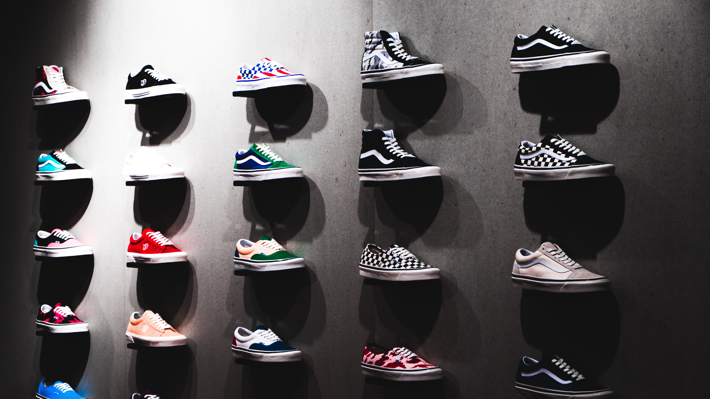

By Obi Anyanwu on June 14, 2021
Madhappy will launch its first sneaker with Vault by Vans on Tuesday, marking Vans as the latest to partner with the mental health-focused lifestyle brand.
Madhappy looked to friendship bracelets in its rework of the OG Style 43 LX sneaker, featuring stitching in primary colors, the brand name in multiple colors on the sneaker's tongue and a rare ice blue sole and heel that folds down into a slide. The sneakers also come with a set of beads with different colors, letters and symbols for wearers to customize the sneakers.
Cofounded in 2017 by Noah Raf, Peiman Raf, Joshua Sitt and Mason Spector, Madhappy is minority-owned by LVMH Moet Hennessy Louis Vuitton and has collaborated with several brands including Colette, the Los Angeles Lakers and Los Angeles Dodgers, the HBO series Curb Your Enthusiasm and the upcoming film Space Jam. The brand also offers mental health resources such as the in-house content publication The Local Optimist, noncrisis support text line The Local Optimist Hotline and the Madhappy Podcast.
Madhappy's collaboration with Vault by Vans was a year in the making. Vans was sought out for its quintessential California footwear and apparel and for its shared mission to create a sneaker that promotes community. The first customizable style launches at 10 a.m. PST on June 15 and the second release will be on July 13.